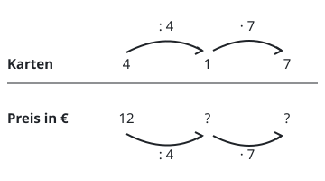

Dreisatz über 1
Mit einem KI-Tutor lernen
Ein KI-Tutor erklärt dir diese Seite und hilft dir bei den Aufgaben. Wähl deinen Assistenten:
Mit Claude öffnen Mit ChatGPT öffnen Mit Mistral Vibe öffnen
Du nutzt dein eigenes Konto beim Anbieter. Der Assistent ist kein Angebot von lernapps.net: lernapps liefert nur Inhalte und Aufgaben. Die Wahl gilt für alle Seiten, nur auf diesem Gerät.
Es geht nicht glatt auf
Jonas hat 4 Postkarten für 12 € gekauft. Elif will 7 Karten gleicher Art. Von 4 auf 7 gibt es keinen glatten Faktor. Nach dieser Seite weißt du, wie du trotzdem rechnest: erst auf 1 Karte, dann auf 7.
Der Weg über die Eins
Wenn die Kartenzahl nicht glatt auf die gesuchte Zahl passt (von 4 auf 7), brauchst du einen Zwischenschritt: den Preis für eine Karte.

© CC-BY-4.0Erst durch 4 auf eine Karte, dann mal 7 auf sieben Karten. Links und rechts rechnest du das Gleiche.
Der Dreisatz hat drei Sätze: Gegeben: 4 Karten kosten 12 €. Auf 1: 1 Karte kostet 12 € : 4 = 3 €. Gesucht: 7 Karten kosten 3 € · 7 = 21 €. Das ist der Weg über die Eins.
Merke
Teilen auf 1 geht immer. Danach ist mal jede beliebige Zahl möglich. Der Preis für 1 Karte heißt auch Preis pro Karte.
Beispiel
Ein Becken füllen
Ben füllt ein Becken. In 4 Minuten laufen 60 Liter ein. Wie viele Liter sind es nach 7 Minuten?
| Minuten | 4 | 1 | 7 |
|---|---|---|---|
| Liter | 60 | ? | ? |
Auf 1 Minute: Liter. Auf 7 Minuten: Liter.
Übung
Aufgabe
Drei Beispielaufgaben, jede mit ihrer Lösung:
Aufgabe Nr. 1
8 Postkarten kosten 24 €. Wie viel Euro kostet 1 Postkarte?
Tipp
Du teilst links durch die Zahl der Karten. Was musst du dann rechts tun?
Lösung
- Links geteilt durch 8: 8 : 8 = 1.
- Rechts auch: 24 : 8 = 3 €.
Richtige Antwort: 3 €
Aufgabe Nr. 2
5 Postkarten kosten 20 €. Wie viel Euro kostet 1 Postkarte?
Tipp
Du teilst links durch die Zahl der Karten. Was musst du dann rechts tun?
Lösung
- Links geteilt durch 5: 5 : 5 = 1.
- Rechts auch: 20 : 5 = 4 €.
Richtige Antwort: 4 €
Aufgabe Nr. 3
6 Postkarten kosten 18 €. Wie viel Euro kostet 1 Postkarte?
Tipp
Du teilst links durch die Zahl der Karten. Was musst du dann rechts tun?
Lösung
- Links geteilt durch 6: 6 : 6 = 1.
- Rechts auch: 18 : 6 = 3 €.
Richtige Antwort: 3 €
Aufgabe
Drei Beispielaufgaben, jede mit ihrer Lösung:
Aufgabe Nr. 1
4 Postkarten kosten 20 €. Wie viel Euro kosten 7 Postkarten?
Tipp
Rechne erst den Preis für 1 Karte aus. Dann nimm ihn mal die gesuchte Kartenzahl.
Lösung
- Auf 1 Karte: 20 : 4 = 5 €.
- Auf 7 Karten: 5 · 7 = 35 €.
Richtige Antwort: 35 €
Aufgabe Nr. 2
3 Postkarten kosten 21 €. Wie viel Euro kosten 4 Postkarten?
Tipp
Rechne erst den Preis für 1 Karte aus. Dann nimm ihn mal die gesuchte Kartenzahl.
Lösung
- Auf 1 Karte: 21 : 3 = 7 €.
- Auf 4 Karten: 7 · 4 = 28 €.
Richtige Antwort: 28 €
Aufgabe Nr. 3
6 Postkarten kosten 18 €. Wie viel Euro kosten 11 Postkarten?
Tipp
Rechne erst den Preis für 1 Karte aus. Dann nimm ihn mal die gesuchte Kartenzahl.
Lösung
- Auf 1 Karte: 18 : 6 = 3 €.
- Auf 11 Karten: 3 · 11 = 33 €.
Richtige Antwort: 33 €
Aufgabe
Lösung
Richtige Antwort: 105 Liter
In 1 Minute laufen Liter ein. In 7 Minuten sind es Liter.
Aufgabe
Lösung
Richtige Antwort: 6 Minuten
Pro Minute 15 Liter. Für 90 Liter brauchst du Minuten.
Aufgabe
Lösung
15 € : 5 = 3 €, dann 3 € · 8 richtige Antwort
Erst der Preis für 1 Heft (3 €), dann mal 8. Das ist der Weg über die Eins.
15 € + 3 = 18 €
Es kommen 3 Hefte dazu, aber der Preis steigt nicht um 3 €, sondern um 3 Hefte zu je 3 €.
15 € · 8 = 120 €
Du hast den Preis für 5 Hefte mit 8 malgenommen. So wären es 40 Hefte.
Über die Eins: , dann .
Das kannst du jetzt: Du löst jede Dreisatzaufgabe, auch wenn der Faktor nicht glatt aufgeht: erst auf 1, dann auf die gesuchte Zahl. Als Nächstes brauchst du das für Pläne und Karten: den Maßstab.
Fehler gefunden oder eine Idee für diese App?